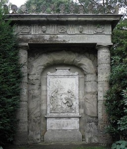
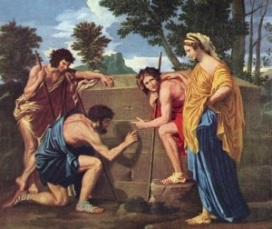
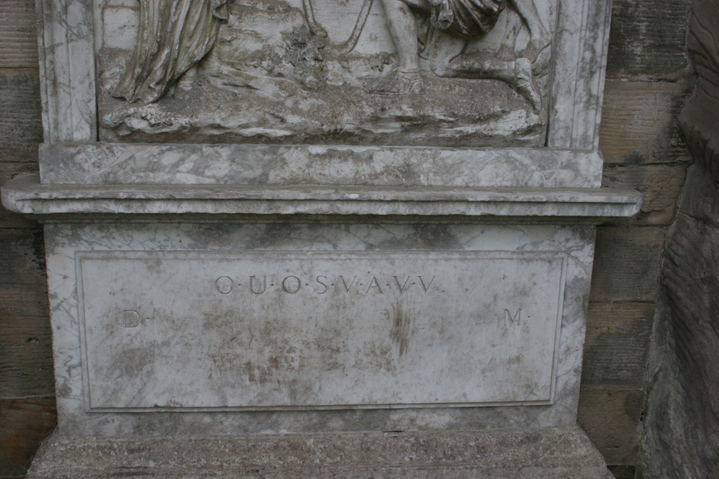
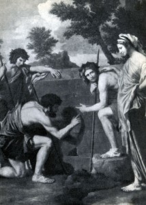

This monument is located in Staffordshire (England) and for 250 years has been giving fans peace of mind to solve puzzles. The fact is that it has carved a strange sequence of letters DOUOSVAVVM, which can not be deciphered. Prominent minds such as Charles Dickens and Charles Darwin fought over this encryption.

Fig.1. Photo of the general view of the shepherd’s monuments
Author of the inscription is unknown, but it is believed that it was left by the Knights Templar, and it contains a hint about the location of the Holy Grail.
British decipherers Oliver and Sheila Lowen, who worked out Nazi codes during World War II, began work on unravelling the mystery of the Shepherd Monument in Staffordshire. This monument, built on Lord Lichfield’s Shagborough estate in 1748, features a bas-relief that is a copy of the famous painting by Nicolas Poussin (1594-1665), The Shepherds of Arcadia, in a mirror image.
Fig. 2. N. Poussin “Shepherds of Arcadia” (1637-39)
Under the bas-relief on the stone are carved letters that for many centuries do not give rest to scientists, among whom was Charles Darwin – DOUO S.V.A.V.V.M. The inability to decipher the encrypted message, as well as some other signs suggested that the letters indicate the location of the Holy Grail.
Fig. 3. General view of the mysterious inscription of 1748
The main mistake, according to 85-year-old Oliver Lawn and his 81-year-old wife, is that so far researchers have focused on solving the inscription, while the information is encrypted throughout the composition, including the bas-relief. The fact is that, in addition to the fact that the bas-relief mirrors the picture, it has some strange differences from the work of Poussin. Therefore, researchers intend to solve the problem not only with the help of modern and traditional cryptography technologies but also by studying the archives of Lord Litchfield and searching for information about Poussin. In particular, according to Sheila Lawn, the object of study is related to the monument to the Knights Templar, which was found in the XII century, and which, in turn, is associated with parchment from the Cathedral of Reims with coded text. In this text, scientists have managed to decipher the words “Poussin … keeps the key.”


Fig. 4. Comparison of images on the monument (1748) and in the painting by N. Poussin (1639)
Until now, cryptographers, according to Lowney, have misled the first and last letters of the inscription DOUO S.V.A.V.V.M. Scholars believed that they were an abbreviation of Diis manibus, an inscription written on tombs in ancient Rome. Currently, several British scientists are working on the solution of the monument, using both the latest computer cryptographic programs and ancient techniques.

Fig. 5. Guercino. “And in Arcadia Ego.” 1621 – 1623
Such is the general information about the mystery of the shepherd’s monument in Staffordshire (England), created in 1748, which mirrors the painting by Niccolo Poussin “Arcade Shepherds”. Moreover, it is believed that the tone of this picture or, in other words, the reason for its creation was the painting Guercino (Giovanni Francesco Barbieri, 1591-1666) “Et in Arcadia ego”, written by him in 1618-1622. The most complete translation of this inscription is considered the phrase “And (even) in Arcadia I (am)”. In this reading, “I” should be understood as Death. So, the very idea of the picture is to remind happy people that everyone will ever be overtaken by death. In the mythological sense, Arcadia is considered an ideal country of carefree shepherds. Poussin abandoned the direct illustration of death, removed the skull, and replaced it with the reading of the tombstone by the shepherds, as evidence of the life and death of those hidden under this tombstone. I will note at once that this short-expression “Et in Arcadia ego” is not visible in this inscription on the stone. So in this regard, he departed from its specific content and thus generalized its meaning. There is no mysterious inscription we are studying there. He appeared for the first time on this monument.
Thus, the history of the creation of N. Poussin’s painting does not give any reason to be able to somehow connect this inscription with the Grail bowl, to which many researchers have tried to tie it. It can be unequivocally stated that the creation of the inscription was associated with the fixation of dates of birth and death, which from ancient times were written on tombstones. But, the following question immediately arises: who exactly? So far, it should be noted that in this sense, the plot of N. Poussin was more suitable for the author of the monument than the plot of the painting Gverchino. And this serves as additional proof of our assumption that the inscription encrypts the dates of birth and death.
But there is another question: why and for what purposes it was necessary to mirror the image of N. Poussin’s painting? And the third, most important question, is why the author of the monument needed (see Fig.3) to remove the first (D) and last letter (M) of the inscriptions from the general row and place them below? The answer is self-evident – to indicate the year of creation of the inscription!
Thus, the key to solving the inscription is to read the letters as dates, but not in Latin, but by transliterating them into Greek, in which each letter has a numerical designation:
Latin-Greek transliteration
Latin Greek Figures
A a A α 1
D d Δ δ 4
M m M μ 40
V v Ν ν 50
O o O o 70
S s Σ σ,ς 200
U u Υ υ 400
The method of calculating such inscriptions in ancient Greek graffiti and lapidary monuments is described in the articles “Autograph of Achilles” and “Five Autographs of Homer“. Now write the inscription as it is written on the monument (see Fig.3) and below in numbers:
O.U.O. S.V.A.V.V.
D. M.
70.400.70.200.50.1.50.50.
4. 40.
At once we will agree that for drawing up of dates, as in an acrostic, from a letter S it is possible to select necessary figures: 200, or 20, or 2. Similarly for letter O: 70, or 7. And one more rule if units are made with tens or hundreds, they can, if necessary, grow 10 or 100 times. For example, V.A. = 50 +10 = 60 or from a combination of S.V. you can get the following options: S.V. = 200 + 500 = 700; SV = 200 + 50 = 250; SV = 200 + 5 = 205; SV = 20 + 50 = 70; SV = 2 + 50 = 52; SV = 2 + 5 = 7.
So, if the letters at the bottom indicate the dates, then from them you can get the date of the inscription 44 years. Moreover, to get it correctly, we will have to read the inscription not from left to right, but on the contrary – from right to left, as is customary in Hebrew!
These two facts of 44 and the use of Hebrew, suggest that we are talking about the records at the March (A. = 1st month) beginning of the year of the day of the conception of Christ March 25 (SV = 20 + 5 = 25) 4 years = 5-1 = 4) BC and the resurrection of March 25 (S.V. = 20 + 5 = 25) 31 (A.V.V.M. = 40-5-5 + 1 = 31). A detailed justification for these dates is given in my article “Blessed are they that not seen, and yet have believed!” (On the earthly life of Jesus Christ). Christ’s life was supremely harmonious and liturgically closed, he was conceived at Kyriopas, the Passover is called the Lord’s, because it coincides with the Annunciation, which is celebrated on March 25. The beginning and end of Christ’s life were accompanied by two miracles. Immaculate Conception on Kyriopas, March 25, 4 BC, birth December 25, 4 BC 274 days later (S.V.A.V.V.M. = 200 + 50 + 10 + 5 + 5 + 4 = 274) and the resurrection on Kyriopas, March 25, 31 BC. for the old style. Thus, this inscription serves as another confirmation, expressed by me in the above article on the resurrection of Christ at Kyriopas on Sunday, March 25, 31 in the old style.
There were many different assumptions about what the letters D. and M. meant for the signature, now we can say with confidence that this signature means the consecration of the Virgin Mary: M (aria) D (edicatio) – Mary is dedicated! Thus, the left part of the inscription describes the date of birth of the Virgin Mary and her resurrection. Moreover, it is now clear why the creator of the monument needed to mirror the image of N. Poussin’s painting – for the Virgin depicted on it to appear on the side of the inscription dedicated to the Virgin Mary!
Mary was born through DOUOS = -4 + 7 + 40-70 + 200 = 167 days after March 25, ie September 8 in the old style OUOD = -7 + 40-7-4 = 22 BC, ie Christ she gave birth at the age of 18. According to this inscription, made on the anniversary of her death, she died in 43 AD. (O.U.O. = 40-4 + 7 = 43) 3 days (O.D. = 7-4 = 3) before his birthday resurrected 3 days later, ie on Sunday, September 8, 43 AD. If we assume that the Mother of God died in 11 days (OD = 7 + 4 = 11), ie on Saturday, August 28, 43, as it is customary to celebrate today on this day of the Assumption of the Virgin, then the resurrection, in this case, will fall on Monday 30 August 43, which must be rejected immediately. Or we must admit that the resurrection of the Virgin was not. And this, in my opinion, is even more sacrilege.
Thus, the life of the Mother of God turned out to be as harmonious as that of Christ, but after the earthly birth, and not after the heavenly conception, that is, liturgically closed! According to the old style, August 28, 43 fell on a Saturday, and in this case, the resurrection should fall on Monday, August 30, 43. So, the Assumption of the Virgin, according to this record, should be celebrated not on August 28, but on September 6 in the old style, for then the resurrection in 43 took place on Sunday, September 8, 43. Thus, the Mother of God lived an earthly life of exactly 65 years.
P.Yu. Malkov in an article from Volume V of the Orthodox Encyclopedia, Moscow, 2002, pp. 486-487, writes that the Church Tradition tells of the sea voyage of the Mother of God to the one whom the Lord once resurrected and who became Bishop Lazarus of Cyprus. Along the way, her ship was caught in a storm and transported to Mount Athos. With the arrival of the Virgin, paganism was defeated on Mount Athos. Then the Virgin sailed with her companions to Cyprus, where she visited Lazarus. During her journey, the Mother of God visited Ephesus. When she returned to Jerusalem, she continued to pray often and for a long time in places that were connected with the events of Her Son’s earthly life. According to the “Legend of the Assumption of the Blessed Virgin”, the fact that Her earthly death is imminent, the Virgin learned from the Archangel Gabriel. The Mother of God accepted this news with great joy: She had a quick meeting with her Son. When the Virgin lay on her deathbed, a miraculous event took place: by the power of God, the apostles were gathered in her house, who was then in different countries, who thanks to this miracle were able to be present at the Assumption of the Virgin Mary. Only the Apostle Thomas was not in the bed of the Mother of God (episode and description of the Assumption of the Mother of God according to the Latin version of the Apocrypha about the Assumption of the Blessed Virgin). According to Church tradition, after the death of the Mother of God, the apostles laid her body in a tomb-cave, blocking the entrance with a large stone. On the 3rd day, they were joined by Thomas, who was absent on the day of the Assumption, and who suffered greatly from the fact that he never had time to say goodbye to the Mother of God. During his tearful prayer, the apostles rolled away from the stone from the entrance to the cave so that he too could say goodbye to the body of the deceased Mother of God. But, to their surprise, they did not find Her body inside the cave. Here lay only Her clothes, from which came strange odours. The Orthodox Church preserves the Tradition that the Mother of God was revived by the power of God on the 3rd day after Her Assumption and ascended to Heaven. The year of the Assumption of the Blessed Virgin is called different by ancient spiritual writers and church historians. Eusebius of Caesarea indicates 48 AD, Hippolytus of Rome – 43 AD, Epiphanius of Cyprus – 25 years after the Ascension of Christ, Nicephorus Callistus – 44 AD.
As we can see, the year of his death, determined by us, coincides with the data of Hippolytus of Rome (170-236). He was one of the most prolific early Christian authors, a martyr, the first antipope (217/218 – 235), was quartered and martyred. It is very important for our subject that he worked in Rome, but wrote in Greek, his education was Hellenic (so, the above transliteration was commonplace for him); could have been a Roman native of Greek descent, but most pathologists believe he came from the East in adulthood. In his theological works, Hippolytus is a hard-working, meticulous collector of ideas expressed by his predecessors. He may have received manuscripts from one of the apostles, based on which he composed this inscription.
It should be noted that the reasons to hide this inscription in the 18th century. was more than enough, because until now in all church calendars and holidays of the Western and Eastern churches, the day of the Assumption of the Virgin was celebrated for hundreds of years on August 28 in the old style, and it became a church canon. Opposition to this, both then and now, is seen by the church as sacrilege. It remains to be seen to whom this inscription belongs if it is proved that it belongs to one of the apostles, and according to the date of its creation it is very likely, then the clergy should review the date of the Assumption of the Virgin. As you can see, the inscription itself does not answer this question, because it allows two possible answers. The answer to this question must be found in the hidden texts of the New Testament. For, as it is said in the Gospel of Mark (4:22): “There is nothing secret that is not known manifestly, neither is there any secret that should not go out.”
6.01.2015